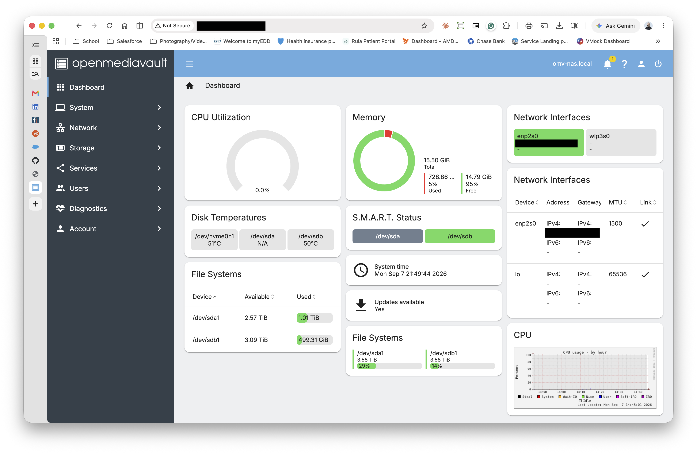

Home Lab NAS & Automated Backup Server
A dedicated storage appliance deployed on an x86 mini PC running Debian Linux and OpenMediaVault. Built to solve high-volume media archival needs with persistent local network access and automated, hands-off client backups.
// 01. Context & Objective
Running a production photography workflow generates terabytes of uncompressed RAW and video assets. Relying on tethered external hard drives created fragmentation, sync bottlenecks, and elevated drive wear. The objective was to engineer an independent, always-on local storage node that delivers:
- High-throughput SMB shares for multi-machine media editing and central archiving.
- Native, background macOS Time Machine target via Apple-extended Samba modules.
- Automated data verification, disk health telemetry, and non-blocking background synchronization.
// 02. Appliance & Network Topology
Physical hardware and storage bus routing. The Debian host operates headless on a dedicated static IP, terminating gigabit LAN traffic and distributing IO across isolated USB 3.2 controller channels.
// 03. Filesystem Architecture & Persistent UUIDs
To avoid mount failures caused by shifting device names (e.g., /dev/sdb swapping with /dev/sdc on reboot), both 4TB EXT4 arrays were provisioned and mounted explicitly by their immutable filesystem UUIDs inside /etc/fstab.
/dev/sda1: UUID="e792b736-5577-4eed-bbdf-58592e5ee268" BLOCK_SIZE="4096" TYPE="ext4" PARTUUID="0001a4bc-01"
/dev/sdb1: UUID="c987f9e0-17b7-4acd-8539-2852278908be" BLOCK_SIZE="4096" TYPE="ext4" PARTUUID="0002b8dc-01"
$ sudo lsblk -f
NAME FSTYPE FSVER LABEL UUID MOUNTPOINTS
sda
└─sda1 ext4 1.0 e792b736-5577-4eed-bbdf-58592e5ee268 /srv/dev-disk-by-uuid-e792b736-5577-4eed-bbdf-58592e5ee268
sdb
└─sdb1 ext4 1.0 c987f9e0-17b7-4acd-8539-2852278908be /srv/dev-disk-by-uuid-c987f9e0-17b7-4acd-8539-2852278908be
// 04. Management Dashboard & Telemetry

// 05. Apple Time Machine & Samba Integration
Standard Samba configurations struggle with Apple's native network backup protocol. By pairing vfs_fruit and vfs_catia with extended Samba parameters, macOS recognizes the network share as a valid native Time Machine destination with proper metadata handling.
[TimeMachine]
path = /srv/dev-disk-by-uuid-c987f9e0-17b7-4acd-8539-2852278908be/backups
valid users = @users
read only = no
vfs objects = catia fruit streams_xattr
fruit:time machine = yes
fruit:time machine max size = 3500G
fruit:metadata = stream
// 06. Data Migration & S.M.A.R.T. Telemetry
Initial archival synchronization moved approximately 1.1TB of photographic data. Transfers were isolated inside detached GNU screen sessions via rsync with archive preservation flags (-avhP) to safeguard against terminal termination or network drops. Routine filesystem and block device integrity is monitored through OpenMediaVault scheduled diagnostics.
$ screen -S media-migration
$ rsync -avhP --stats /source/media/ /srv/dev-disk-by-uuid-e792b736-5577-4eed-bbdf-58592e5ee268/
# Storage verification & telemetry environment [x86_64 Debian Linux 7.1.8+deb13-amd64]
$ sudo smartctl -V
smartctl 7.4 2023-08-01 r5530 [x86_64-linux-7.1.8+deb13-amd64]
=== STORAGE SUBSYSTEM MONITORING ===
Block Device Telemetry: Active via OpenMediaVault storage services daemon
Target Filesystem: EXT4 /dev/sda1 [UUID: e792b736-5577-4eed-bbdf-58592e5ee268] — ONLINE